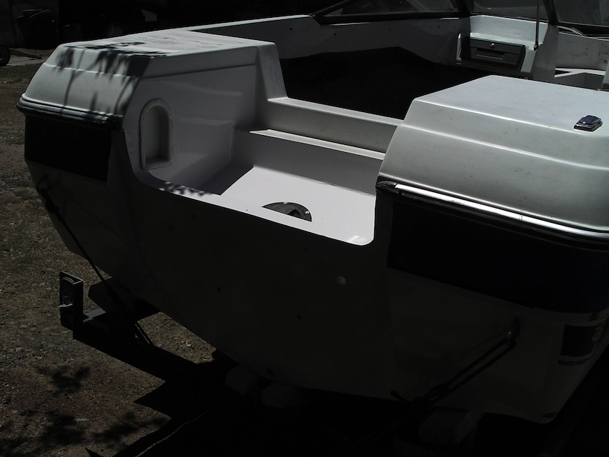
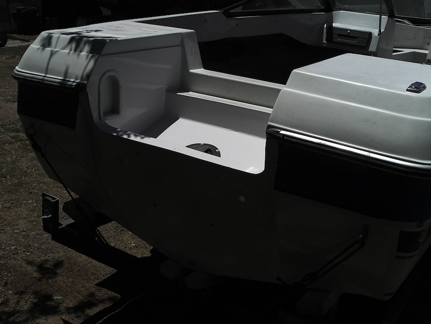

Reparación estructural de espejo • 2024 • Quintero
La lancha deportiva de 6 metros de eslora del cliente Cristian Sepúlveda ingresó a nuestras instalaciones con un deterioro estructural crítico en el espejo de popa. El daño se concentraba en el sándwich interno de madera que soporta el motor fuera de borda de 50 HP, el cual presentaba podredumbre por filtración, comprometiendo la seguridad de la embarcación.
En CONAVRE realizamos una reparación estructural especializada que devolvió integridad al casco y soporte confiable al motor, prolongando la vida útil de la nave.
Este tipo de reparación, aunque localizada, es fundamental para garantizar la seguridad estructural de embarcaciones deportivas que operan con motores de alto empuje. En CONAVRE cuidamos tanto los detalles técnicos como el acabado estético, logrando resultados duraderos y confiables.
 

¿Tienes un proyecto similar? Solicita tu cotización